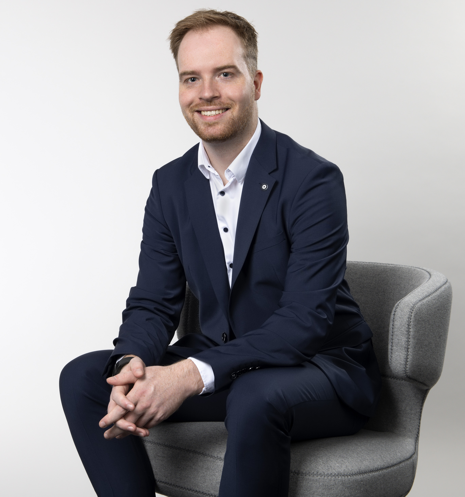

Profile
Consultant for digital process automation with a passion for creating efficient, user-friendly software solutions. Delivering tailormade software solutions focused on Robotic Process Automation with UiPath but always looking outside the box for the best fit.
Motivation
While I have seen the benefit of process mining in multiple real use cases, I have yet to dive deeper into these projects. Preparing to write my bachelor's thesis next year, I came across the announcement on the WI website and immediately got to work on my CV to seize this opportunity. I have around 5 years of work experience in client projects with robotic process automation and a strong interest in adapting innovative technologies. While my situation as a fulltime employed consultant is unusual, I can offer outstanding project management and communication skills as well as a highly technical background.
Experience
Team Lead
cronos automation GmbH | Oct 2024 - Present
- Improved the onboarding and mentoring process by implementing new quality assurance workflows.
- Leading a team of 5 consultants to automate manual and repetitive business processes for clients.
IT Consultant
cronos automation GmbH | Jan 2024 - Sep 2024
- Managed multiple parallel projects to deliver solutions in time and in budget.
- Lead Trainings for multiple clients.
Junior IT Consultant
cronos automation GmbH | Oct 2022 - Dec 2024
- Certified Advanced UiPath developer preparing and consulting on clients IT infrastructure to efficiently run RPA software unattended.
- Developed various UiPath projects, identified and automated reporting in Excel with VBA.
- Lead project to migrate RPA Infrastructure from local company server to Azure cloud.
- Implemented Azure DevOps to monitor development progress for UiPath projects within the company.
Working Student IT Consulting with focus on RPA
cronos automation GmbH | Apr 2020 - Sep 2022
- Contributed to RPA projects in multiple companies in diverse fields of business.
- Participated and prepared trainings for clients.
Education
Bachelor of Science in Information Systems
University of Muenster | Oct 2017 - expected 2025
Skills
- .NET
- VBA
- C#
- Java
- SQL
- UiPath
- Power Automate
- Git
- Azure DevOps
- Atlassian Jira